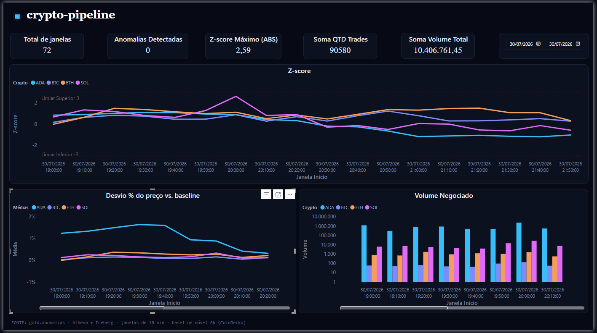
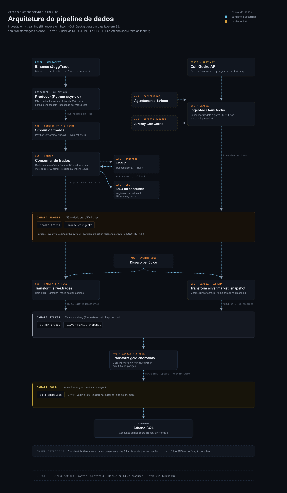

🪙 crypto-pipeline
Pipeline de dados end-to-end para detecção de anomalias de preço e volume em criptoativos, combinando ingestão batch (baseline histórico) e streaming em tempo real (sinal de mercado), 100% em AWS com infraestrutura como código.
Contexto e motivação
Preço de um ativo, isolado, diz pouco. O que importa é o desvio em relação ao comportamento recente. Este projeto constrói duas fontes de dados complementares para permitir essa comparação:
- CoinGecko (batch) — captura periódica de preço/volume/market cap, servindo como baseline histórico de cada ativo.
- Binance WebSocket (streaming) — trades em tempo real (
aggTrade), servindo como sinal ao vivo do mercado.
A camada gold.anomalias cruza as duas fontes para identificar quando o comportamento em tempo real se desvia do padrão histórico recente — o objetivo final do pipeline.
Ativos monitorados: Bitcoin, Ethereum, Solana, Cardano (BTC, ETH, SOL, ADA).

Arquitetura

Por baixo de tudo: Glue Data Catalog (bronze/silver/gold) + Athena Workgroup (trava de custo por query) + CloudWatch Alarms/SNS nas 3 Lambdas de transformação
Status do projeto
| Etapa | Descrição | Status |
|---|---|---|
| 1 | Ingestão batch (Lambda + EventBridge + S3 + Secrets Manager + Budgets) | ✅ Implantado e validado |
| 2a | Infra de streaming (Kinesis + Lambda consumer + DynamoDB + SQS DLQ + CloudWatch) | ✅ Validado end-to-end, efêmero (destruído/recriado por ciclo) |
| 2b | Producer WebSocket Binance (async, resiliente, testado) | ✅ Completo |
| 3 | Silver layer (Athena + Iceberg): tipagem, dedup residual, backfill | ✅ Completo, validado com dado real |
| 4 | Gold layer (gold.anomalias): VWAP + baseline móvel + z-score |
✅ Completo, validado com dado real |
| 5 | Power BI conectado ao Athena | ✅ Completo, validado com dado real |
Stack técnico
- Ingestão: Python (
asyncio,websockets,boto3), AWS Lambda - Streaming: Amazon Kinesis Data Streams (on-demand)
- Dedup (bronze): Amazon DynamoDB (conditional writes)
- Storage bronze: Amazon S3 (JSON, particionado Hive + partition projection)
- Storage silver/gold: Amazon S3 + Apache Iceberg (particionamento oculto,
MERGE INTO, schema evolution) - Motor de transformação: Amazon Athena (SQL, serverless — sem cluster Spark)
- Metastore: AWS Glue Data Catalog
- Orquestração das transformações: EventBridge (schedule) → Lambda →
athena.start_query_execution() - Observabilidade: CloudWatch (alarms, logs, métricas), SNS (e-mail), SQS (dead-letter queue)
- IaC: Terraform (módulos por etapa:
infra/,infra/streaming/,infra/athena/) - Testes: pytest, pytest-asyncio, mocks de boto3 (sem custo de AWS real)
- CI: GitHub Actions
- Visualização: Power BI (conector nativo Athena via ODBC)
Estrutura do repositório
crypto-pipeline/
├── infra/
│ ├── (Etapa 1 — batch: Lambda, S3, Secrets, Budgets, IAM)
│ ├── streaming/ (Etapa 2a — Kinesis, consumer Lambda, DynamoDB, SQS, alarms)
│ └── athena/ (Etapa 3+4 — Glue DBs, Workgroup, staging bucket, 3 Lambdas,
│ EventBridge, IAM, alarmes SNS)
├── sql/
│ └── ddl/ (DDL rodado manualmente 1x — bronze, silver e gold)
│ ├── bronze_tables.sql
│ ├── silver_tables.sql
│ └── gold_tables.sql
├── src/
│ ├── ingestion/coingecko/handler.py # Lambda de ingestão batch
│ ├── consumer/trades/handler.py # Lambda consumer do Kinesis
│ ├── producer/binance/producer.py # Producer WebSocket → Kinesis
│ └── transform/
│ ├── common/ # compartilhado pelas 3 Lambdas de transformação
│ │ ├── athena_executor.py # dispara query, faz polling até concluir
│ │ ├── partitions.py # calcula partições (hora atual + anterior)
│ │ └── transform_runner.py # orquestra partições, modo incremental/backfill
│ ├── silver/
│ │ ├── trades_handler.py + silver_trades_merge.sql
│ │ └── market_snapshot_handler.py + silver_market_snapshot_merge.sql
│ └── gold/
│ └── anomalias_handler.py + gold_anomalias_merge.sql
├── tests/ (43 testes — producer, consumer, ingestão, silver, gold)
└── .github/workflows/ci.yml
Como rodar localmente
Testes (sem AWS real, tudo mockado):
python -m pytest tests/ -v
Producer contra a Binance real (requer credenciais AWS e infra de streaming aplicada):
$env:KINESIS_STREAM_NAME = "<nome do stream>"
$env:AWS_REGION = "us-east-1"
$env:AWS_PROFILE = "<seu profile>"
$env:SYMBOLS = "btcusdt,ethusdt,solusdt,adausdt"
python src/producer/binance/producer.py
Infraestrutura (cada módulo é aplicado/destruído independente — states separados):
cd infra\athena # ou infra\streaming, ou infra\ (raiz)
terraform init
terraform plan -out=tfplan
terraform apply tfplan
Disparo manual de uma Lambda de transformação (fora do schedule do EventBridge):
# Modo incremental (padrão — hora atual + anterior)
aws lambda invoke --function-name crypto-pipeline-silver-trades-transform --profile <profile> --payload '{}' out.json
# Modo backfill (carga histórica, uma vez só)
aws lambda invoke --function-name crypto-pipeline-silver-market-snapshot-transform --profile <profile> --payload '{"backfill": true}' out.json
No Windows, se o --payload inline der erro de encoding, use o console do Lambda (aba Test) — mais confiável que lidar com escaping de aspas no PowerShell.
Decisões de arquitetura
Ingestão e streaming (bronze)
Kinesis Data Streams (on-demand) foi escolhido pelo alinhamento entre modelo de cobrança e perfil de uso: cobra por volume ingerido, sem infraestrutura ociosa, adequado a um producer que roda sob demanda, não 24/7.
Partition key: symbol + aggTradeId. Evita hot shards, se a chave fosse só o símbolo, os 4 ativos concentrariam trades em poucas partições. A ordenação temporal necessária para análise não depende da partição: o campo trade_time, embutido no registro, é usado para agregação por janela na leitura.
@aggTrade em vez de @trade. Agrega múltiplas execuções ao mesmo preço em um único evento — menos mensagens, mesma informação relevante.
Producer assíncrono com fila interna produtor-consumidor. Duas corrotinas conectadas por uma asyncio.Queue: uma recebe do WebSocket continuamente, outra drena e envia ao Kinesis em lote — desacopla a taxa de chegada da taxa de flush.
Producer on-demand, não Fargate 24/7. O producer roda sob demanda (execução local ou container pontual para janelas de captura), não como serviço contínuo no Fargate. A decisão é de custo-benefício: manter um container 24/7 gera custo fixo contínuo desproporcional para um pipeline de portfólio
boto3 síncrono via asyncio.to_thread, aioboto3/aiobotocore foram avaliados e descartados. O aiobotocore implementa async sobrescrevendo métodos internos (não-públicos) do botocore, o que o obriga a pinnar o botocore em faixas de versão estreitas, histórico documentado de conflitos de dependência downstream. O ganho de I/O nativamente assíncrono só compensa sob alta concorrência de chamadas à AWS; no projeto é um put_records a cada ~2s. boto3 síncrono despachado via asyncio.to_thread é o padrão recomendado pela documentação do asyncio para bibliotecas de I/O síncronas em contexto assíncrono: não bloqueia o event loop (nem o WebSocket) e mantém dependência apenas no SDK oficial, sem acoplamento a internals.
Resiliência do producer. Retry limitado a 3 tentativas com backoff exponencial, sem recursão infinita, que travaria o loop de envio. Ao esgotar tentativas, os trades voltam à fila principal em vez de serem descartados. Se a fila estiver cheia no reenfileiramento, descarta com log.
Shutdown gracioso no Windows. loop.add_signal_handler() sempre levanta NotImplementedError no Windows — o handler gracioso nunca é instalado localmente. O KeyboardInterrupt é capturado no entrypoint (try/except em torno do asyncio.run()) pra evitar traceback cru no Ctrl+C local. Em produção (container Linux), o shutdown gracioso completo funciona normalmente.
Deduplicação via DynamoDB (conditional writes). attribute_not_exists como condição de escrita garante idempotência distribuída. A alternativa (dropDuplicates na silver) exportaria o problema de dedup pra uma etapa posterior, menos rastreável. Otimizações: dedup em memória dentro do próprio lote + ThreadPoolExecutor de 25 workers reduziram o tempo de processamento de ~3.5s para ~140ms. TTL de 6h no DynamoDB é suficiente pra cobrir reprocessamento sem acumular estado indefinidamente.
1 arquivo por lote. Trade-off consciente do problema de small files, priorizando rastreabilidade lote → arquivo. ESM: até 500 registros ou 10s, o que ocorrer primeiro.
Confiabilidade do Event Source Mapping (ESM). ReportBatchItemFailures (falha parcial, não tudo-ou-nada) + BisectBatchOnFunctionError (isola o registro problemático) + MaximumRetryAttempts=3 + MaximumRecordAgeInSeconds=3600, com SQS DLQ como destino final.
Padrão saga/compensação. Se a marca de dedup é gravada no DynamoDB mas a escrita no S3 falha depois, o handler executa delete_item de compensação (rollback best-effort). O TTL de 6h é a salvaguarda pra qualquer rollback que também falhe.
IteratorAge como métrica de lag. Indicador de disponibilidade (SLI) do streaming — se crescer, o consumer processa mais devagar do que os dados chegam.
Retenção do Kinesis: 24h (padrão). Kinesis é transporte, não storage — os dados persistem no S3; a retenção só cobre uma eventual janela de reprocessamento.
price/quantity como STRING até a silver. A Binance envia esses campos como string intencionalmente. Converter para float no bronze introduziria erro de arredondamento binário (0.1+0.2=0.30000000000000004). A tipagem correta (DecimalType/DECIMAL(38,8)) acontece na silver, onde os cálculos de fato ocorrem.
Silver layer
Motor: Athena (SQL) O trabalho necessário (cast de tipo, parse de timestamp, dedup residual, união lógica) é inteiramente expressável em SQL declarativo — não exige processamento distribuído. Athena cobra só por TB escaneado, sem cluster nem tempo mínimo de warm-up.
Formato de tabela: Apache Iceberg (silver/gold), não tabelas Hive convencionais. O formato de arquivo continua sendo Parquet, Iceberg é a camada transacional de metadados sobre ele. Resolve dois problemas reais que apareceram durante o desenvolvimento: schema evolution (adicionar/alterar coluna sem recriar a tabela nem reprocessar histórico) e MERGE INTO/upsert nativo e atômico, sem ele, cada atualização da gold exigiria ROW_NUMBER() + INSERT OVERWRITE manual: reescrita da partição inteira, sem atomicidade em caso de falha no meio da operação. A bronze permanece como external table Hive convencional com partition projection, dado imutável append-only não precisa de transação.
Particionamento oculto (PARTITIONED BY (day(ingested_at))), não pastas manuais. O Iceberg gerencia partição no metadado da tabela, não existe mais year=/month=/day=/hour= como estrutura física que a query precisa conhecer. Interação sempre via SQL; a organização física interna (inclusive nomes de arquivo/diretório gerados pelo engine) pode mudar entre versões sem quebrar nada.
Bronze com partition projection, não Crawler/MSCK REPAIR. O Athena calcula as partições existentes a partir do padrão de path na hora da query, dispensando um Crawler agendado ou uma chamada explícita de MSCK REPAIR TABLE a cada nova hora criada.
Dois databases Glue via Terraform, tabelas via script DDL manual. Mesma lógica do secrets.tf: infraestrutura (recurso com ARN, IAM associada) via Terraform; schema (DDL de tabela) via script, rodado uma vez.
Renomeação de _ingested_at → ingested_at na fonte (nos handlers), com compatibilidade retroativa no schema. Identificador começando com _ exige aspas em toda query Trino, e crase (não aspas simples) na sintaxe DDL Hive usada no CREATE EXTERNAL TABLE, dois dialetos diferentes dentro do mesmo Athena. Como já existiam arquivos gravados com o nome antigo (batch acumulado da CoinGecko, considerado valioso pra gold), a tabela bronze declara as duas colunas e o MERGE INTO usa COALESCE(ingested_at, _ingested_at) sem perder histórico nem precisar reprocessar/renomear nada no S3.
Coluna asset_symbol normalizada em ambas as tabelas silver. "BTCUSDT" (Binance) e "btc" (CoinGecko) apontam pro mesmo ativo com grafias diferentes. Resolvendo uma vez na silver (regexp_replace(symbol, 'USDT$', '') / upper(symbol)), o join da gold fica direto por asset_symbol, sem repetir esse de-para em toda query downstream.
MERGE INTO com WHEN NOT MATCHED THEN INSERT apenas (não UPDATE) na silver. Trade e snapshot são eventos imutáveis — uma vez inseridos, não são alterados. A chave natural do MERGE (trade_id pra trades; (id, last_updated) pra market_snapshot) garante idempotência: reprocessar uma partição já processada não duplica.
Modo backfill separado do modo incremental, no mesmo handler. A Lambda de silver processa por padrão só a hora atual + hora anterior (particoes_a_processar()), pensada pra operação contínua. Dado histórico que já existia antes da Lambda começar a rodar (batch acumulado da CoinGecko) nunca seria alcançado por esse modo. Solução: o handler aceita um payload opcional {"backfill": true}, que troca o filtro de partição por 1=1 (tabela inteira, uma vez). O disparo automático do EventBridge nunca ativa esse modo (evento vazio não tem a chave), e mesmo que fosse acionado por engano, o MERGE idempotente não duplicaria nada — só gastaria uma query extra.
Diagnóstico de janela de agregação com dado real, não estimativa a priori. Antes de fixar o tamanho da janela usada na gold, uma query mediu quantos trades caem em cada janela candidata (5/10/15/20 min), por ativo, descartando a primeira e a última janela de cada grupo, que são truncadas pelo instante exato em que o streaming começa/termina e distorcem o mínimo real. Decisão (10 min) baseada no ativo mais fraco (ADA) não ganhar estabilidade adicional entre 5 e 15 min, só perdendo responsividade.
Gold layer (gold.anomalias)
Baseline é uma janela móvel recalculada, não um ponto fixo de calendário. O "normal" de um ativo não é definido por um valor fixo (ex: mesma hora de ontem/mês passado/ano passado) — não há sazonalidade de calendário relevante em cripto que justifique esse modelo. O baseline é a média e o desvio padrão do CoinGecko nas últimas 6h antes de cada momento, recalculado a cada execução via window function (RANGE BETWEEN INTERVAL '6' HOUR PRECEDING AND CURRENT ROW).
Preço representativo da janela de streaming: VWAP, não média simples. SUM(price*quantity)/SUM(quantity) pondera pelo volume de cada trade, um trade pequeno a um preço atípico não deveria pesar igual a um trade grande, e a média simples deixaria isso acontecer.
Detecção via z-score, limiar de 3 desvios padrão. (preço_vwap_da_janela - baseline_média) / baseline_desvio. Convenção estatística padrão ("regra dos 3 sigma"), ajustável depois de observar dado real em produção.
Agregação de trades em janelas de 10 minutos. Decidido com base no diagnóstico de trades-por-janela descrito na seção de silver — equilíbrio entre estabilidade estatística (evitar que poucos trades numa janela pequena gerem médias ruidosas, produzindo falso positivo) e responsividade.
As-of join via JOIN + ROW_NUMBER(), não subquery correlacionada dentro do ON. Presto/Trino (motor por trás do Athena) tem suporte limitado a subquery correlacionada na cláusula JOIN ... ON. O padrão robusto: JOIN trazendo todos os snapshots do CoinGecko anteriores ou iguais ao fim da janela de trade, depois ROW_NUMBER() OVER (... ORDER BY ingested_at DESC) pra escolher só o mais recente (rn = 1).
MERGE INTO com upsert (WHEN MATCHED THEN UPDATE), diferente do padrão insert-only da silver. Trade e snapshot são imutáveis; o resultado agregado da gold não é — o z_score de uma janela já calculada pode mudar se chegar um snapshot novo do CoinGecko que revise o baseline dela.
Query da gold sem parametrização por partição, diferente das Lambdas de silver. O baseline móvel é window function sobre a tabela inteira de silver.market_snapshot — não dá pra restringir a "hora atual + anterior" sem quebrar o cálculo, que depende de ver as 6h de histórico antes de cada linha. Trade-off assumido: a query recalcula tudo a cada execução; a escala de dado que o projeto processa hoje deixa isso barato o suficiente.
Infraestrutura e operação
Athena Workgroup dedicado com bytes_scanned_cutoff_per_query. Trava de custo em nível de query (1 GB por padrão, ajustável), equivalente ao AWS Budgets já usado na Etapa 1, mas agindo antes do fato (aborta a query) em vez de só alertar depois.
Bucket de staging do Athena separado do data lake, com lifecycle de expiração curta. Resultado de query é dado efêmero (poucos dias de retenção) — não deveria compartilhar bucket nem política de retenção com bronze/silver/gold, que são dado que o projeto quer manter.
Log groups do Lambda declarados explicitamente, com retenção. Sem isso, o Lambda cria o log group sozinho na primeira invocação, mas sem expiração — logs acumulam indefinidamente e geram custo crescente sem necessidade.
Cada módulo Terraform é um root module com state próprio (infra/, infra/streaming/, infra/athena/). Permite destruir/recriar streaming sem afetar batch, por exemplo — só validado na prática quando a Etapa 2a precisou ser destruída por custo sem tocar no resto. Trade-off assumido: variáveis repetidas (como alert_email) precisam ser duplicadas em cada .tfvars.
IAM role única compartilhada pelas 3 Lambdas de transformação, em vez de uma role por Lambda. As três precisam exatamente do mesmo conjunto de permissões (Athena, Glue Catalog, S3 em bronze/silver/gold, staging bucket) — reaproveitar evita repetir a mesma policy três vezes.
Import resiliente a dois layouts nos handlers Python. Cada handler adiciona tanto o próprio diretório quanto o diretório common/ ao sys.path — funciona tanto localmente (common/ como pasta irmã de silver//gold/) quanto dentro do zip do Lambda, onde o Terraform empacota tudo achatado no mesmo diretório via múltiplos blocos source do archive_file.
Testes
43 testes unitários cobrindo producer, consumer, ingestão, e as 3 Lambdas de transformação (silver x2 + gold) — rodam sem AWS real (mocks de boto3 e chamadas HTTP), validados em CI a cada push.
python -m pytest tests/ -v
Gestão de custos
- Kinesis on-demand, producer sob demanda (não 24/7) — Etapa 2
- Infra de streaming destruída após cada ciclo de validação, recriada via
terraform applycom.tfvarssalvo - Athena Workgroup com
bytes_scanned_cutoff_per_query— trava por query, não só alerta pós-fato - Bucket de staging do Athena com lifecycle de expiração (3 dias)
- Log groups com retenção explícita (14 dias) em todas as Lambdas
- AWS Budgets com alertas escalonados desde a Etapa 1
Roadmap
- [ ] Ajustar o limiar do z-score (hoje 3 desvios) com base em dado real de produção
- [ ] Reavaliar o custo do full-scan da query de gold conforme o histórico crescer